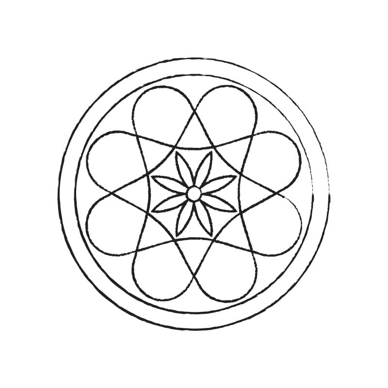

GRANDE!
La chiave inserita ha decriptato il prossimo indizio.

Volendo i Turchi del 1570 soggiogare il regno di Cipro, s’attendarono sotto Bicosia, e guidati da Mustafà, incominciarono a battere quella fortezza.
In breve i Cristiani si videro impossibilitati a resistere, e dovettero aprire le porte ai nemici, che, contrariamente ai patti, trucidarono i maggiorenti, fra i quali Nicolò Dandolo, Pietro Pisani, e Nicolò Contarini vescovo di Paffo. Poscia si riversarono per le contrade uccidendo e imprigionando quanti incontravano, saccheggiando le case demolendo le chiese, e non rispettando l’onore donnesco.
Era la notte successiva all’eccidio, e si vedevano ancorati in porto tre navigli, legati assieme, sopra i quali Mustafà aveva fatto caricare la preda più preziosa e le più avvenenti donne e donzelle destinate in dono al sultano.
Stava prigioniera sopra uno di questi navigli Belisandra Meraviglia, sorella di Giovanni Secretario del senato, e vedova di Pietro Albino cancelliere di Cipro, ucciso nella presa di Nicosia.
L’idea d’una terribile vendetta corse per la mente della donna, e con una miccia accesa diede fuoco, nel colmo della notte, al deposito delle polveri, facendo saltare in aria sé stessa coi navigli, e con quanti altri prigionieri ed oggetti eranvi sopra. Disperato proposito, col quale ella volle sfogare il suo odio contro gli infedeli e sottrarsi all’ignominia del suo stato!

In una calle nelle vicinanze del ponte vi è una forma come quella in figura. Sopra quale numero campeggia? Suggerimento: xxxxLa chiave inserita ha decriptato il prossimo indizio.
La chiave inserita non è corretta...